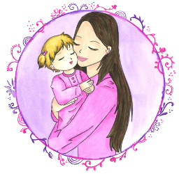

Все статьи
Образ здорового ребенка. Лечение маминой любовью.

Каждая мама способна помочь ребенку справиться даже с тяжелой болезнью. Она может избавить своего сына или дочь от страхов, бессонницы, заикания и прочих нервных нарушений. Наконец, мама может дать ребенку установку на счастье (можно назвать это благословением на счастливую жизнь) – энергия этой установки создаст пространство, в котором он СМОЖЕТ развить свои способности, таланты, раскрыть свой потенциал, вырасти и стать счастливым человеком.
Очень важным моментом является то, каким мать видит своего ребенка в настоящем и в будущем. Глядя на него в настоящем, принимает ли она его таким, какой он есть? Глядя в его будущее, видит ли она его в позитивном ключе- здоровым, счастливым, умелым, успешным? Это Важно – принимать ребенка как есть и уметь видеть его счастливое будущее! Это нормально- когда родитель знает (видит это как бы внутренним зрением), что его ребенок (дети) пойдут дальше, чем он, добьются большего, будут жить лучше, будут, возможно, совсем не такими, как его родители, будут новыми, удивительными и счастливыми людьми, достигающими таких высот, о которых мы даже не могли мечтать, дерзающих браться за вещи, которые нам кажутся недостижимыми, небывалыми. Важно выстраивать для себя этот образ его здорового тела, ума, души, его счастливого будущего. Желать, мечтать об этом, как бы невзначай проговариваясь, рассказывать ребенку о том, что он станет взрослым, преодолеет те трудности, которые у него (допустим) сейчас есть, у него будет дружная семья, забавные дети, они будут делать то-то и то-то. Ребенок, находящийся в психическом поле своей мамы, автоматически как бы настраивается на этот образ и допускает его как ВОЗМОЖНЫЙ для себя. Таким образом открывается это пространство жизни, где всё о чем вы намечтали, уже почти сбылось, оно уже маячит на горизонте и зовет сделать шаги в свою сторону.
К слову и в копилку интересных методик для мам, желающих сделать посильный вклад в здоровье своего ребенка, приведу психотерапевтическую методику, разработанную детским психиатром профессором Борисом Зиновьевичем Драпкиным. Она называется «Лечение маминой любовью».
Базируется она на понимании того, что дети, наполненные маминой любовью, лучше растут и развиваются. Недолюбленный ребенок чаще болеет, выздоровление проходит медленно, он имеет склонность к плохому поведению и непослушанию. Для нормального развития ребенку просто необходимо, чтобы его как можно чаще обнимали, целовали, тискали, с любовью и нежностью смотрели в глаза. Доктор Драпкин утверждает, что до 2 лет ребенок и мама должны быть всегда вместе. Если мама часто оставляет ребенка с бабушкой или няней, малыш хуже развивается и чаще болеет, так как прерывается поток любви.
Большое значение для ребенка любого возраста (даже школьника старших классов) имеет мамин голос. Еще находясь в утробе, малыш слышит его. Родившись, с легкостью узнает его интонации и перемены в настроении. Если с детства ребенок слышит любящий ласковый мамин голос, поддерживающий, одобряющий, успокаивающий, он развивается быстрее и лучше, т.к. так мама дает ребенку установку на любовь, здоровье, успех и удачу в жизни. Совсем другая программа задается ребенку, который с раннего детства слышит критику в свой адрес, упреки и претензии – как бы записывается программа на болезни и неудачи.
Настрой на счастье и здоровье
Метод Драпкина заключается в том, что мама читает своему ребенку текст из специально подобранных и проверенных фраз, которые нельзя менять местами или пропускать. Его полезно читать как новорожденным, так и взрослым детям, как больным, так и здоровым. Ведь это, прежде всего, установка на счастье и здоровье, она будет полезна любому.
Базовая часть состоит из 4х блоков.
1-й блок – «Витамин материнской любви», с помощью этих слов мама напитывает ребенка своей любовью.
2-й блок – установка на физическое здоровье. Мама как бы внутренним взором видит гармоничный образ своего ребенка и направляет ребенка следовать ему. В этом блоке заключена вся педиатрия. Есть состояния, когда только эта мамина терапия может излечить без всяких лекарств. Хотя, конечно, есть и другие болезни, более серьезные, которые могут требовать медикаментозного лечения, но и в этом случае мамино внушение важно, оно мобилизует организм ребенка, поднимает его внутренние резервы на борьбу с заболеванием. «Маминым словом» лечатся и бронхиальная астма, и кожные экземы, помогает оно даже при онкологических болезнях.
3-й блок – установка на нервно-психическое здоровье, на нормальное психическое развитие.
4-й блок отражает народную мудрость. Издревле, когда не было рядом профессиональной медицинской помощи, мама брала больного ребенка, прижимала к себе и своей внутренней силой очищала его от болезни: «Отдай мне свою болезнь...» .
1-й блок – «Витамин материнской любви», с помощью этих слов мама напитывает ребенка своей любовью.
2-й блок – установка на физическое здоровье. Мама как бы внутренним взором видит гармоничный образ своего ребенка и направляет ребенка следовать ему. В этом блоке заключена вся педиатрия. Есть состояния, когда только эта мамина терапия может излечить без всяких лекарств. Хотя, конечно, есть и другие болезни, более серьезные, которые могут требовать медикаментозного лечения, но и в этом случае мамино внушение важно, оно мобилизует организм ребенка, поднимает его внутренние резервы на борьбу с заболеванием. «Маминым словом» лечатся и бронхиальная астма, и кожные экземы, помогает оно даже при онкологических болезнях.
3-й блок – установка на нервно-психическое здоровье, на нормальное психическое развитие.
4-й блок отражает народную мудрость. Издревле, когда не было рядом профессиональной медицинской помощи, мама брала больного ребенка, прижимала к себе и своей внутренней силой очищала его от болезни: «Отдай мне свою болезнь...» .
Действенней всего эта методика будет работать, если вы будете произносить фразы, когда ребенок сладко спит ночью. Примерно через 20-30 минут после его засыпания присядьте рядом и сначала мысленно, а затем и вслух произносите фразу за фразой. Вложите в эти слова всю свою ласку и любовь, пошлите своему ребенку свои флюиды любви. Итак,
1 -й блок. Витамин материнской любви
Я тебя очень сильно люблю.
Ты — самое дорогое и родное, что у меня есть.
Ты — моя родная частичка, родная кровинушка.
Я без тебя не могу жить.
Я и папа тебя очень сильно любим.
2-й блок. Физическое здоровье (говоря, представляйте своего ребенка в идеале, здоровым и крепким)
Ты сильный, здоровый, красивый мальчик (девочка).
Ты хорошо кушаешь и поэтому быстро растешь и развиваешься.
У тебя крепкие и здоровые сердечко, грудка, животик.
У тебя нежная, гладкая и влажная кожа.
Ты легко и красиво двигаешься.
Ты здоровый, закаленный, редко и мало болеешь.
3-й блок. Нервно-психическое здоровье ребенка
Ты спокойный мальчик (девочка).
У тебя хорошие, крепкие нервы.
Ты умный малыш.
У тебя хорошо развиваются головка и ум.
Ты хорошо спишь, легко и быстро засыпаешь.
У тебя хорошее настроение, и ты любишь улыбаться.
Ты видишь только хорошие, добрые сны.
У тебя хорошо и быстро развивается речь.
4-й блок. Эмоциональный эффект, очищение от болезней (из народной медицины)
Я забираю и выбрасываю твою болезнь.
Я забираю и выбрасываю (перечисляете проблемы вашего малыша, включая плохой аппетит или сон, обидчивость и т.д.).
Я тебя очень-очень сильно люблю.
Читать это нужно каждый день: месяц, два - зависит от состояния ребенка. Ни высокая температура, ни другие проявления болезни противопоказаниями не являются. А вот если сама мама не в форме - заболела, взвинчена, - сеанс лучше отменить.
1 -й блок. Витамин материнской любви
Я тебя очень сильно люблю.
Ты — самое дорогое и родное, что у меня есть.
Ты — моя родная частичка, родная кровинушка.
Я без тебя не могу жить.
Я и папа тебя очень сильно любим.
2-й блок. Физическое здоровье (говоря, представляйте своего ребенка в идеале, здоровым и крепким)
Ты сильный, здоровый, красивый мальчик (девочка).
Ты хорошо кушаешь и поэтому быстро растешь и развиваешься.
У тебя крепкие и здоровые сердечко, грудка, животик.
У тебя нежная, гладкая и влажная кожа.
Ты легко и красиво двигаешься.
Ты здоровый, закаленный, редко и мало болеешь.
3-й блок. Нервно-психическое здоровье ребенка
Ты спокойный мальчик (девочка).
У тебя хорошие, крепкие нервы.
Ты умный малыш.
У тебя хорошо развиваются головка и ум.
Ты хорошо спишь, легко и быстро засыпаешь.
У тебя хорошее настроение, и ты любишь улыбаться.
Ты видишь только хорошие, добрые сны.
У тебя хорошо и быстро развивается речь.
4-й блок. Эмоциональный эффект, очищение от болезней (из народной медицины)
Я забираю и выбрасываю твою болезнь.
Я забираю и выбрасываю (перечисляете проблемы вашего малыша, включая плохой аппетит или сон, обидчивость и т.д.).
Я тебя очень-очень сильно люблю.
Читать это нужно каждый день: месяц, два - зависит от состояния ребенка. Ни высокая температура, ни другие проявления болезни противопоказаниями не являются. А вот если сама мама не в форме - заболела, взвинчена, - сеанс лучше отменить.
Второй пункт этого метода - ведение Дневника.
Если вы начнете пользоваться методом лечения материнской любовью, возьмите себе за правило вести дневник. В течение дня внимательно наблюдайте за своим ребенком, прислушивайтесь к нему и записывайте все новые достижения. Пусть поначалу они будут незначительными, но со временем вы удивитесь, как ваш ребенок меняется, становится более спокойным и уравновешенным, более здоровым и крепким. Удивительными будут и те перемены, которые вы отметите в себе.
Удачи и веры в добрые перемены!